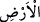

üçüncü bir grup için de her iki gerekçeyle tesis edilmiştir. Bugün de yakalanıp
cezalandırılan ümmet ve milletler için durum aynıdır. Rolünü tamamlamış olanlar
sonunda ilâhî kudret tarafından yakalanıp cezâlandırılırlar.
Bilinmelidir ki kullar af ve ihsanın, yakalayıp intikam almaktan Allah’a daha sevimli
olduğunu görmeleri ve Allah’ın şefkat iyilik ve keremini, rahmetinin gazabını geçtiğini
bilmeleri için Allah Teâlâ kullara mühlet vermekte; onları hemen ve ansızın
cezalandırmamaktadır. Sonra kullar Allah’ın keremiyle adâletinin, lütfuyla kahrının,
cemâl sıfatıyla celâl sıfatının farkını bilmezlerse, Allah Teâlâ onları hem dünyada hem
de âhirette çeşitli belâ ve azaplarla yakalar. Bu mümin hakkında bir temizlik; kâfir
hakkında ise halis bir azap ve cezâdır. Zira kâfir temizlik ehlinden değildir. Çünkü bu
gibi temizlikler, küfürden başka bir takım mâsiyet ve günah kirleriyle ilgilidir.
Allah Teâlâ bizleri ve sizleri gazap, azap ve ceza gerektiren hallerden korusun!
45. Eğer Allah, yaptıkları yüzünden insanları (hemen) cezalandırsaydı,
yeryüzünde hiçbir canlı yaratık bırakmazdı. Fakat Allah, onları belirtilmiş bir
süreye kadar erteliyor. Vakitleri gelince (gerekeni yapar). Kuşkusuz Allah, kullarını
görmektedir.
“Eğer Allah, yaptıkları” isyanlar/mâsiyetler/günahlar “yüzünden insanları”n
hepsini “(hemen) cezalandırsaydı,” yâni insanların şirk ve mâsiyet yüzünden elde
ettiklerinin cezasını geçmiş ümmetleri muâhezesi gibi muâheze etseydi, “yeryüzünde”
Âdemoğlundan yahut diğerlerinden “hiçbir canlı yaratık bırakmazdı.”
Buradaki kinâye zikri geçmemiş olsa da makamdan anlaşılan “
” kelimesine
râcîdir. “ ” kelimesi, Âdemoğullarından yeryüzünde gezip dolaşan canlıyı ifâde eder.
Çünkü mükellef olup cezâlandırılacak olan onlardır. Âyetin devamı bu mânâyı teyid
etmektedir. Yahut diğer canlılar da olabilir. Zira mükelleflerin mâsiyetlerinin
uğursuzluğu sahralardaki hayvanlara ve havadaki kuşlara bile kıtlık ve benzeri zararlar
verir. Bundan dolayı denilir ki kim bir suç ve günah işlerse bütün insanlar ve cinler,
ehlî ve vahşî hayvanlar, kuşlar ve karıncalar kıyâmet günü ondan dâvâcı olacaktır.
Allah Teâlâ Nuh (a.s.) zamanında Nuh tufanıyla gemiye binenler dışında bütün insan
ve hayvanları helâk etmiştir. Bu ise müşrik ve kâfirlerin uğursuzluğu sebebiyle olmuştur.
Bazı imamlar der ki bu âyetin mânâsı, Âdemoğlunun günahı sebebiyle hayvanların da
helâk edilmesi değildir. Ancak hayvanlar, Âdemoğlunun menfaati için yaratılmıştır.